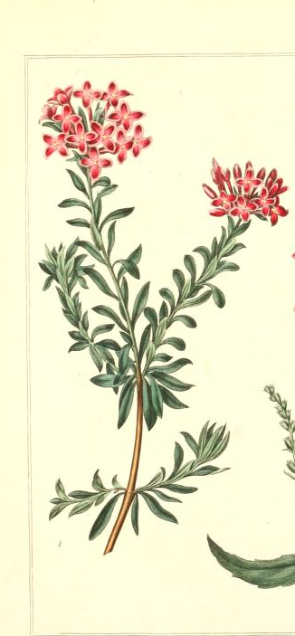
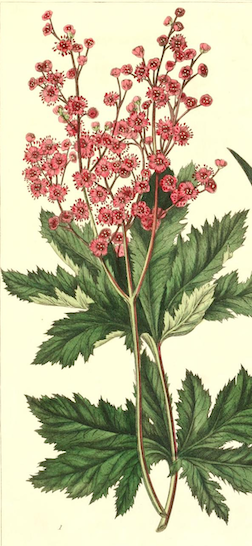
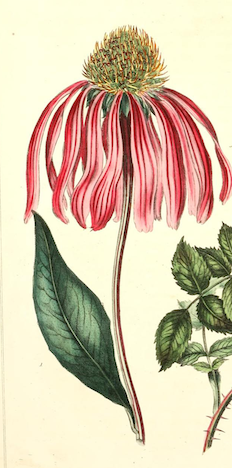

-

1. Daphne
I Desire to Please
Quote about first flower
In one of the more famous Greek myths pertaining to youth-transformed-into-plant, the Daphne bloom derives its name from a greek dryad (or tree spirit) who fell victim to a vengeance plot concocted by Eros against Apollo. He shot two arrows: the first struck Apollo and filled him with a desperate desire for Daphne, and the second struck Daphne herself, giving her a violent aversion to all things romantic. Apollo pursued Daphne until she could physically no longer escape, and after a quick prayer to her father river god father, Peneus, she found herself transformed into the laurel tree. Apollo adorned himself with branches from this new tree, and adopted it as his special symbol. Even now, the Daphne bloom is associated with an overtly feminine desire to please.
In non-Western cultures, the Daphne bloom also holds a vital space. In Chinese medicine, the blooms can be used to ease back pain, and in paper-making techniques of Bhutan and Nepal.
-
2. Lotus
Elegance, Purity, Overcoming Adversity
"No mud, no lotus." -Thích Nhất Hạnh
There are certain flowers included in this index that carry such enormous and ancient cultural meanings that adequately qualifying them in these terms feels almost impossible. The Lotus, almost more than any other flower, is steeped in crucial religious, social, and philosophical meanings. Religiously, the lotus blossom exists as a vital symbol in Hinduism, Buddhism, and Jainism. A very general summary of certain religious symbolisms of the lotus flower have to do with the blossom's ability to flourish in adversity. The plant's aquatic growing enviornment most likely informs that specific connotation.
Another facet attributed to the perserverance of the lotus blossom has to do with its resilience to stains--it rises from the mud without any traces, and is therefore often linked to notions of purity and cleanliness.

-

3. Meadowsweet
Uselessness
The genus name for Meadowsweet, the Latin Filipendula, come from the compounding of two words "filum" which means "thread," and "pendulus," meaning "hanging." The word describes the thread-like fibers of the plant's root system. The meadowsweet, in mythology, can be traced to the Mabinogion, a Welsh medieval manuscript. In it, two magicians conjure flowers from the meadowsweet plant to create an idealized woman named Blodeuwedd, destined to be wed to a Welsh hero. Her name literally translates to "flower-faced." She betrays her human husband, and in vengeance, the two magicians who created her transform her into an owl, a bird condemned to be loathed by all others for eternity.
Meadowsweet is native to the British Isles, and as such, much of its symbolism springs from that area. Many ancient burial sites in Carmarthenshire, Ashgrove, and Fife have evidence of Meadowsweet being used to adorn graves.
-
4. Periwinkle
Early Friendship
"It's an odd thing, happiness. Some people take happiness from gold. Or black pearls. And some of us, far more fortunate, take their happiness from periwinkles." Patricia A. McKillip, The Changeling Sea(1988)
As always, it can be useful to approach the overall symbolism of the flowers in this index from an etymological perspective. Periwinkle is linked to the Latin term pervincire, which means "binding" or "entwining." Most likely, this description comes from the periwinkle's tendency to act more like a vine than a flowering shrub or bush. The periwinkle plant, practically speaking, carries an accute medical legacy that remains potent even to this day--many scientists study the Madagascar Periwinkle because it may contain alkaloids that treat some cancers.
In medieval England, periwinkles were said to adorn the heads of condemned men, inspiring this rhyme: "Crowned one with laurel leaves hye on his head set other with pervink [periwinkle] made for the giblet." In medieval France, the flower had a surprising nickname that most likely arouse from its already extant medicinal uses: Violette des sorciers, or the Sorcerer's Violet. In Victorian contexts, the unassuming bloom was often given as a token of friendship, particularly between women.

-

5. Rudbeckia
Love Conquers All
"'When black-eyed Susan came aboard;/'O, where shall I my true-love find?/Tell me, ye jovial sailors, tell me true/If my sweet William sails among the crew.'"-John Gay, "Sweet William's Farewell to Black-Eyed Susan"
A general term for the more commonly known Black Eyed Susan, the Rudbeckia (named for botanist Olaf Rudbeck) can come in a variety of shades, from a startlingly bright yellow to a more muted pink. The flower's name is thought to be a reference to a poem written by John Gay about a woman searching for her lost love William. The poem relates to the flower because of the Black Eyed Susan's tendency to bloom in tandum with another blossom included in this index: the Sweet William.
Before any European infringement, however, this flower had a stark cultural tie to herbalist practices in several Native American tribes. Most notably, it was used as a salve for topical skin issues, and is still used today in teas meant to treat colds.